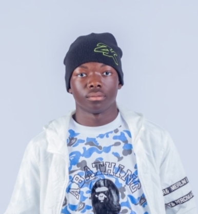
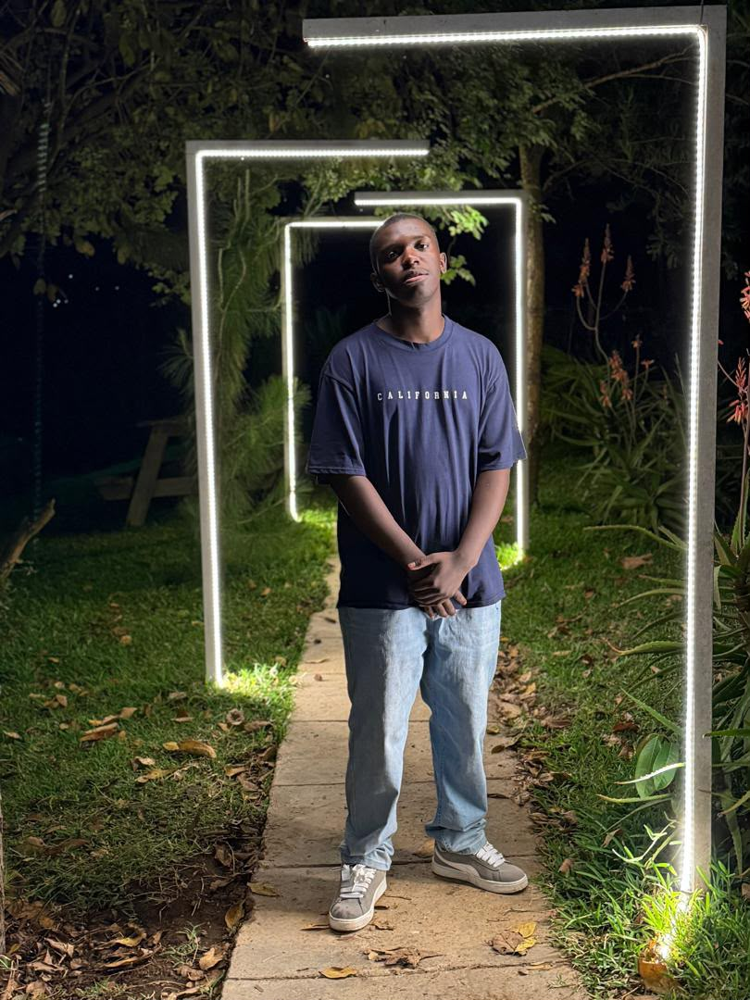

About Us
Welcome to the About page. Here you can learn more about us.
About the founder



Chapter One: Two Friends, One Vision
Every great invention begins with an idea. Every successful company begins with a dream, and behind every extraordinary achievement, there are people who dare to believe in something bigger than themselves.
This is the story of two young men, Mitchel Moffat Mukemu and Deraka Miswalo.
They were more than just friends. They shared ambitions, challenged each other’s thinking, and believed that their future could be much bigger than the circumstances surrounding them.
Like many young people, they understood how difficult it could be to find opportunities, especially when it came to pursuing university education. Thousands of talented students around the world dreamed of attending university, but many struggled to find the right institutions, understand admission requirements, discover scholarships, or navigate application procedures.
They began asking themselves a simple but powerful question:
What if finding and applying to university could become easier for everyone, regardless of where they come from?
That question would eventually become the foundation of something extraordinary.
Chapter Three: Building Something Bigger
Mitchel and Deraka decided that Bridgeway would not simply be another application.
They wanted it to become a global educational platform.
They began planning its features:
* University Discovery: Students could explore universities from different countries.
* Course Search: Students could find programmes that matched their interests and ambitions.
* Scholarship Opportunities: Students could discover financial support available to them.
* Application Assistance: Clear guidance on university application procedures and requirements.
* Admission Tracking: Students could monitor the progress of their applications.
* Student Guidance: Helpful information about qualifications, deadlines, and studying abroad.
* Global Opportunities: A platform connecting students with educational opportunities beyond geographical boundaries.
Their dream was that no student should miss an opportunity simply because they did not know where to look.
They wanted Bridgeway to make information accessible, understandable, and useful.
Chapter Four: The Challenges
The journey was not always smooth.
There were moments when the work seemed overwhelming. Some ideas failed, plans had to be reconsidered, and the technical challenges appeared greater than expected.
There were disagreements, too.
But Mitchel and Deraka understood something important: being business partners did not mean agreeing on everything. It meant respecting each other’s opinions, communicating honestly, and working towards the same destination.
They learned to divide responsibilities, make decisions together, and remain committed to their mission.
Their friendship became the foundation of their partnership.
They were not simply building software. They were building a future.
Chapter Five: From Zambia to the World
Years later, the name Bridgeway began reaching beyond the borders of Zambia.
Students discovered the platform and started using it to explore universities and educational opportunities.
What had started as a conversation between two friends was becoming a global vision.
Bridgeway continued growing, attracting universities, educational organisations, and partners who believed in its mission.
The founders never forgot where it all began.
They remembered the conversations, the early plans, the challenges, and the determination that brought them together.
Mitchel Moffat Mukemu and Deraka Miswalo had started with an idea, but they were building something that could outlive them.
Chapter Six: A Legacy Beyond Business
For Mitchel and Deraka, success was never supposed to be measured by money alone.
It was measured by the opportunities they helped create.
It was measured by the student who discovered a scholarship through Bridgeway.
The student who found the right university.
The young person who had almost given up on pursuing higher education but discovered a new path forward.
Every successful student became part of their story.
They wanted Bridgeway to become a trusted global name in university access, helping generations of students turn educational dreams into reality.
And whenever someone asked how it all started, the answer would remain simple:
Two friends. One vision. One application. A world of possibilities.
Mitchel Moffat Mukemu and Deraka Miswalo — Co-founders of Bridgeway.
OUR MOTTO
“Building bridges to education. Connecting dreams to opportunities. Empowering the next generation of global leaders.”
OUR MISSION
To make university education more accessible by connecting students around the world with universities, scholarships, and opportunities that can transform their futures.
OUR VISION
To become one of the world’s most trusted educational platforms, ensuring that every student, regardless of their background or location, has a bridge to higher education.
BRIDGEWAY — YOUR FUTURE HAS A BRIDGE.